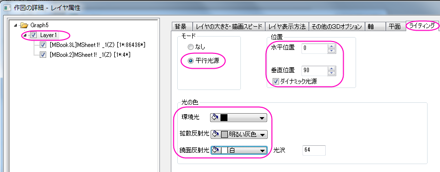
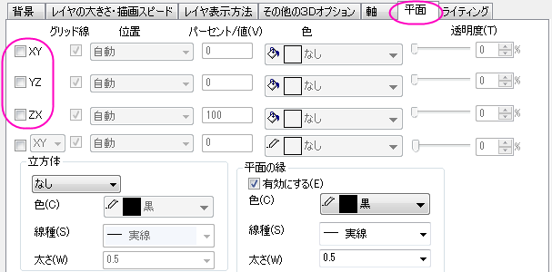

透過面付き曲面
非線形曲面（3D）フィット
このグラフはOntario湖のトポロジーを示しています。これは3D曲面と透過させた平面を組み合わせて作成されています
必要なOriginのバージョン: Origin 2015 SR0以降
学習する項目
このチュートリアルでは、以下の項目について解説します:
- 3Dカラーマップ曲面図を作図する
- 既存の3D曲面図に透過した平面を追加する
- 3D曲面図にライティング設定を行う
ステップ
このチュートリアルは、チュートリアルデータプロジェクト<Origin EXE フォルダ>\Samples\TutorialData.opjと関連しています。
- チュートリアルデータプロジェクトを開き、プロジェクトエクスプローラで、Surface With
Transparent Planeフォルダを開きます。
- MBook3Lをアクティブにし、すべての列を選択します。メインメニューから作図：3D：3Dカラーマップ曲面を選択します。グラフウィンドウが表示され、以下のように3Dカラーマップ曲面図が作成されます。

- グラフウィンドウ左上のレイヤアイコン１を右クリックし、レイヤの内容を選択してダイアログを開きます。MBook2
を３D曲面としてこのグラフに追加します。それには、以下に示すように左側パネルから右側パネルに中央の矢印を使用することで行います。その後OK
ボタンをクリックして、ダイアログを閉じます。
- グラフをダブルクリックして作図の詳細ダイアログを開きます。左側パネルが表示されていない場合は、ボタンを使用して開きます。このダイアログで3Ｄプロットを編集します。左側パネルでLayer1を選択して、右側パネルで軸タブを開き、下図のように設定します。
- 左側パネルでLayer1 のすぐ下にあるプロットを選択し、カラーマップ/等高線タブを開きます。レベルヘッダをクリックしてレベルの設定ダイアログを開きます。このダイアログで、下図のように設定を行います。
- OK ボタンをクリックして、レベルの設定ダイアログを閉じます。色塗りヘッダをクリックして、塗り方ダイアログを開きます。塗り方ダイアログで、パレットをロードラジオボタンを選択し、パレット選択ボタンをクリックして、Watermelonパレットを選びます。OKをクリックし、塗り方ダイアログを閉じます。
- 等高線を非表示にするため、カラーマップ/等高線タブで等高線図を有効にするのチェックを外します。
- メッシュを非表示にするため、メッシュタブで有効にするのチェックを外します。
- 側壁タブを開き、有効にするチェックを付けてXとYの側壁を下図のように設定します。
- 数値の表現形式タブに切り替え、小数点桁数を0にします。
- 左側パネルの2番目のプロットを選択し、面タブを開いて透明度を48に設定します。
- 作図の詳細ダイアログで塗りつぶしタブを開き、ひとつずつ塗りつぶすを選択し、色を青にします。適用ボタンをクリックして、グラフを確認します。。
- 次に、ライティング効果を設定します。左側パネルでLayer1を選択して、右側パネルでライティングタブを開き、下図のように設定します。
- 
- 平面タブに移動し、XY, YZ, ZX 平面のチェックボックスのチェックを外します。OK
ボタンをクリックして、作図の詳細ダイアログを閉じます。
- 
- 次に、タイトルを追加します。グラフウィンドウの空白エリアを右クリックし、レイヤタイトルを追加/変更をメニューから選択して、テキストボックスにLake
Ontario と入力します。タイトルを右クリックしてオブジェクトの表示属性を選択してオブジェクトプロパティダイアログを開きます。テキストタブで、フォントのサイズを31にし、枠タブの枠
を 影に設定します。
-
- 色スケールを編集するには、色スケールをダブルクリックし、色スケール制御ダイアログを開きます。軸と軸目盛を左側パネルで選択し、右側パネルの表示内で右の軸と軸目盛を表示と境界を表示のチェックを外し、線、目盛、境界を非表示にします。
- 左側パネルでレイアウトを選択します。色スケールの幅を150に設定して色スケールの幅を変更します。棒の縁からのラベルオフセットを0にして、ラベルを色スケールに近づけます。
- 左側パネルでタイトルを選択します。右側で表示が選択されていることを確認し、タイトルのテキストボックスの最後に(m)を追加します。これで色スケールのタイトルは
Elevation(m)になります。フォントの下のサイズを18に変更します。OKをクリックしてこの設定を適用して、ダイアログを閉じます。
-
- 見栄えをよくするため、色スケールのタイトルをダブルクリックしてインプレース編集モードにし、カーソルを(m)表示の前においてEnterキーを押して(m)を改行します。最終的に、下図のようなグラフになります。